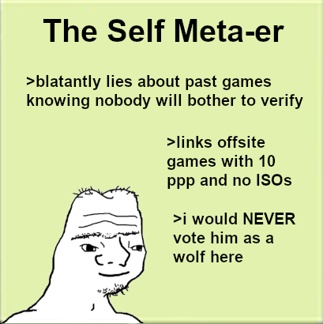

yeah even though i think pkr still needs to go i don’t want to waste this entire day doing nothing else
[quote=“Marshal, post:3238, topic:87956, full:true”]
What alignment is ETP???
So to preface this, even in eli’s best wolfgames he is nearly incapable of creating independant reads, something in abundance here. But that meta read is simply not enough for me even if it is a good look in my opinion and enough to put him at a solid degree of town.
His early sequence on PKR is already good, it’s aggressive and unwavering
[quote=“EliThePsycho, post:158, topic:87956”]
If PKR is mafia this sequence is almost clearing by itself, 18 posts in, but i’m not preflipping quite yet. I like this because it’s bold and aggressive, something that I think wolf eli would have trouble faking right off the bat.

screenshotting as i can’t be bothered to find the quote
but he doesn’t really imply pkr is wolf here which feels a little weird
like it seems he wasn’t pushing pkr on the basis of their alignment and more on it being cringe. This sequence itself is tonally fine but tone means little to nothing to me, the first sequence isn’t really clearing with that in mind (unless pkr is wolf, which i think it would be, especially with how pkr discredits eli’s read as “not even level-1”)
his treatment of the dome is honestly generally pretty good with what I believe wolves plan was? Marl sort of co-opted my chloe push in an attempt to genuinely bury her. His attempt to discredit the attempt is a decent look with this in mind, but doesn’t really go past ‘decent’ because I don’t know marl’s full plan.
[quote=“EliThePsycho, post:1523, topic:87956”]
[quote=“Vulgard, post:1436, topic:87956”]
this is an entire wall detailing why I think he’s still probably a villager even if he broke his meta
ok i just read sfol66 again and i thought he actually made reads in that game but he did not
yeah i think eli is still probably town from what i’ve seen here
the closest thing to a read was “X has good posts”
there is much more depth in this game
He does iso dive PKR in SFoL 66, but yeah he was much more sheepy there than in this game tbh
Also, PKR was NK in that game so take that as you will.
he still does some iso dives in SFoL 66, but there is more independence in his reads here.
im not 100% Convinced, but I see where Marshal’s argument is coming from
still would like to re-eval just to cover bases though
Think about this for a second: if I’m a wolf, I know we’re killing Nightingale, so I have no reason to change the read on the slot overnight. I can just remove all mentions of Zori from my “overnight post” and explain that I removed it before posting the message at SoD.
I fail to see the argument how backing down makes me a wolf. If I’m a wolf, putting more villagers in the PoE benefits me.
I could see this being a wolf’s stance on another wolf with a worse position. Just saying.
Speaking of Eli, the fact he hasn’t posted anything of note today yet is NAGL but I’m giving him time.
Not impossible and I have thought about this. Marshal has also had some level of self-awareness about this; she outright says day 1 that we are going to make this accusation day 2 as she voices her townread on Eli.
True for reasoning, but it felt pretty awkard of a backout which is where i can see arctic coming from in his point, and i did agree with arctic that your read on him is one that i cant see W!Vul pulling off that significantly and keeping up with it as you did
but is it
realistically with the PoE we have if both of them are wolves its possible
We have 2 outted town PRs (mist and min), and 1 unoutted town PR, then a few consensus-ish villagers. If blizer and PKR are both likely to get shredded through soon then i don’t find it super unlikely that he goes in and tries to change it. Realistically the last person in that group prob isnt endgaming.
Espec. with him attacking my eli read. I think that’s the exact angle he’d take as w/w because his team probably needs that specific miselimination and attacking not only eli’s play but the credibility of my read and introducing it as w/w serves to shake up and lessen a person’s spot in villa core that they desperately need out of there
does not exist
Okay lets continue down this then
Who the fuck would be our last wolf partner if both me and PKR are wolves (Im not, i think PKR is town, but he could be wolf)
lol
hippo
derps
atlas
Also if i was Wolf with PKR, I would have left the slot to die and then just try my damndest to set me and my last wolf partner for to get to endgame with whats avalible to me

1 Like
Okay, here is the thing with that
If hippo is my wolf partner in this scenario, i think he actually could just meme on all of you, and yes im being serious with that claim he could and would if he tries lol.
Atlas ive never played before, and so i have no clue of their experince as a wolf before
I can see it being applicaple with Derps, even then, i would bus his ass for cred
It wasn’t intended to be a cover lmao
People misread a post of mine and thought I claimed neighboriser
PKR is at L-2 with your vote i think
last VC had PKR at L-3, and i dont think anyone changed their vote surronding the wagon
Ah yes, I am the vote master